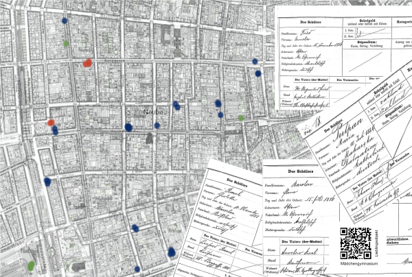
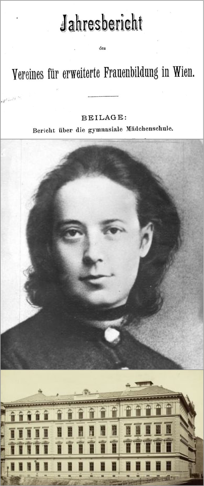
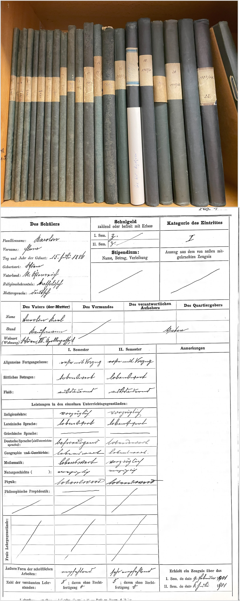
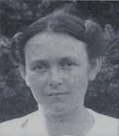
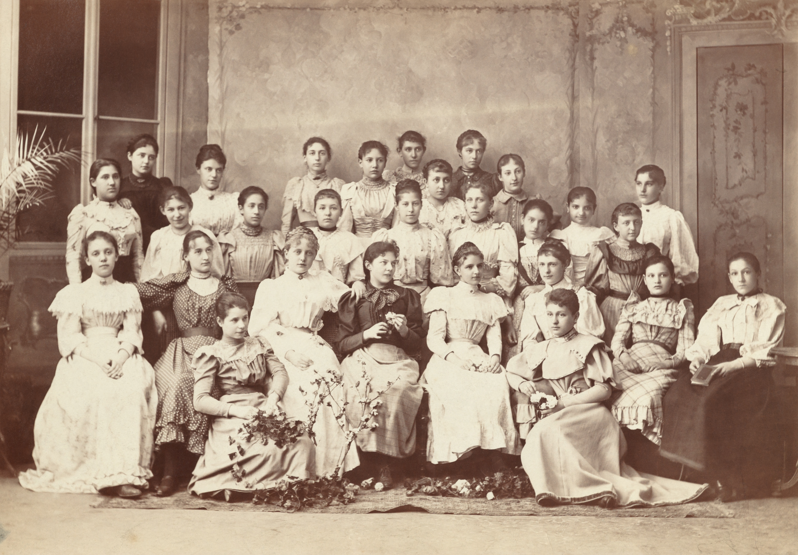
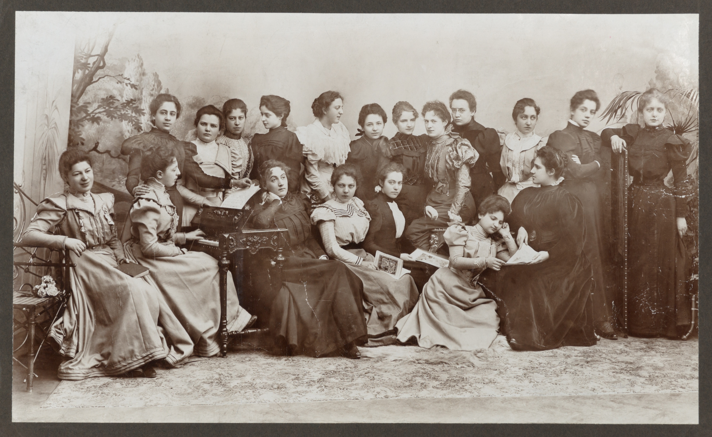

Pionierinnen der Frauenbildung
Die Schülerinnen am ersten deutschsprachigen Mädchengymnasium. Das erste Gymnasium, das Mädchen besuchen konnten: das erste in Wien, das erste in Österreich, das erste mit deutscher Unterrichtssprache weltweit.
Das Mädchengymnasium
Das Mädchengymnasium eröffnete Frauen neue Bildungswege und bereitete sie auf Matura und Universitätsstudium vor.
Im Jahr 1892, als die gymnasiale Mädchenschule (der offizielle Name des Mädchengymnasiums) als Vereinsschule eröffnet wurde, waren Frauen in Österreich noch vom Universitätsstudium ausgeschlossen.
Erst 1897 konnten Frauen an der Philosophischen Fakultät studieren, ab 1900 war auch das Medizinstudium für Frauen geöffnet.
Wien Geschichte Wiki: Mädchengymnasium Wien Geschichte Wiki: Frauenbildung
Und der 7. Bezirk?
Im Untersuchungszeitraum 1893-1903 besuchten 15 Mädchen aus dem 7. Bezirk das Mädchengymnasium.
Flora Barolin (geboren: 1886-07-15, in: Wien/Vienna), Louise Brodhag (geboren: 1887-03-04, in: Wien/Vienna), Rosa Filipek (geboren: 1886-04-24, in: Wien/Vienna), Amalia Fried (geboren: 1886-12-15, in: Wien/Vienna), Julie Görtz, von (geboren: 1884-12-19, in: Wien/Vienna), Leopoldine Helmreich (geboren: 1883-10-15, in: Imst (Arzl)/Imst), Johanna Hieckmann (geboren: 1884-12-04, in: Reichenberg/Liberec), Elsbeth Hönisch (geboren: 1875-05-24, in: Zittau/Zittau), Frieda Kapper (geboren: 1885-01-28, in: Wien/Vienna), Editha Lang (geboren: 1877-11-14, in: Iglau/Jihlava), Elfriede Lorenz (geboren: 1879-04-05, in: Gitschin/Jicin), Eugenie Ludwig (geboren: 1879-10-30, in: Znaim/Znojmo), Agnes Masanec (geboren: 1885-01-15, in: Wien/Vienna), Marie Pulpan (geboren: 1884-07-10, in: Makarska/Makarska), Charlotte Rauch (geboren: 1882-11-10, in: Warschau/Warszawa), Marie Twrdy (geboren: 1885-04-26, in: Wien /Vienna)

Mehr zur Karte
Datenbasis, Filter oder Interpretation.
Die meisten Mädchen kamen aus dem 1. (!!!) und dem 9. Bezirk (!!!).
Insgesamt waren es 422 Schülerinnen, die nur kurz oder über den gesamten Zeitraum von 6 Jahren das Mädchengymnasium besuchten.
Bildung und Aufbruch
Marianne Hainisch gehörte dabei zu den treibenden Kräften. Sie forderte gleiche Startbedingungen für Mädchen und Buben, um Theorien über angebliche Unterschiede der geistigen Fähigkeiten praktisch zu widerlegen.
Gegen hartnäckige Widerstände der Behörden, gegen
weitverbreitete Irrmeinungen von männlichen Wissenschaftlern, die die Leistungsfähigkeit
weiblicher Gehirne öffentlich anzweifelten und gegen die allgemeine gesellschaftliche Vorstellung
von Schicklichkeit, kämpften allen voran Marianne Hainisch und der Verein für erweiterte Frauenbildung ebenso hartnäckig und unverdrossen,
bis die Behörden im Jahr 1892 schließlich die Genehmigung zur Eröffnung der über private Spenden und Schulgelder finanzierten Gymnasialen Mädchenschule erteilten.
Mehr Informationen
Hier können weiterführende Informationen ergänzt werden.


Das Archiv spricht
Namen, Geburtsorte, Adressen und Berufe der Eltern
ermöglichen eine biografische Rekonstruktion.
Die Schule steht für einen wichtigen Moment in der Geschichte der Mädchenbildung.
Ihre Kataloge bewahren Spuren institutionellen Wandels und individueller Lebenswege.
Seine Quellen bewahren Namen, Orte, Familienverhältnisse und Einblicke in den Schulalltag.
Wien Geschichte Wiki: Schulkataloge
Quellenhinweis
Hier können Quellen oder methodische Hinweise ergänzt werden.
Was steckt hinter den bunten Punkten auf der Karte?
Sehen Sie selbst:
Wohnten Schülerinnen, die zwischen 1893 und 1903 das Mädchengymnasium besuchten, in der Nähe Ihres eigenen Wohnortes? Vielleicht sogar in derselben Straße, im selben Haus?
Wie hießen diese mutigen Mädchen und jungen Frauen? Wann hatten sie Geburtstag? Wo wurden sie geboren? In welchem Bereich waren ihre Väter und Vormünder tätig? Wer kam aus einem Akademikerhaushalt?
Begleiten Sie eine ausgewählte Gymnasiastin auf ihrem täglichen Schulweg (Montag–Samstag) zum Schulgebäude in der Hegelgasse 12 im 1. Bezirk, wo die gymnasiale Mädchenschule einige Zimmer nutzen durfte.
Wo kreuzen sich Ihre Wege heute mit denen der ersten Gymnasiastinnen von damals?
Mehr zur Karte
Datenbasis, Filter oder Interpretation.
Warum mir diese Karte wichtig ist
Als ich begonnen habe, die Wohnorte der Schülerinnen auf einer Karte einzuzeichnen, wurde mir erstmals die räumliche Dimension bewusst. Hinter jeder Adresse steht eine individuelle Geschichte: ein Alltag zwischen Familie, Schule und gesellschaftlichen Erwartungen.
Die Arbeit mit den Daten hat meinen Blick verändert.
Die ersten Gymnasiastinnen sind nicht mehr nur Namen in Listen, sondern konkrete Personen im Stadtraum. Die Karte macht ihre Wege nachvollziehbar und bringt sie zurück in die heutige Stadt.
Nachdenklich macht mich, wie selbstverständlich wir heute Bildungszugänge wahrnehmen, die in Wien um 1900 gegen große Widerstände erkämpft wurden.
Drei Schülerinnen
Flora Barolin

Geboren in Wien.
Mehr lesen.
Kurzbiografie.
Lebenswelten in der Stadt
Die Wege der Schülerinnen machen Bildungsräume sichtbar.
Methode
Kurzer Hinweis zur Datengrundlage.

Galerie




Zur Galerie
Digitale Objekte und Dokumente.
Schluss
Die Schülerinnen sind mehr als Einträge in einem Katalog.
Ihre Geschichten verbinden Bildung, Stadt und Gesellschaft.
Haben Sie Fragen?
Haben Sie weiterführende Informationen zum Mädchengymnasium, den Lehrern oder Schülerinnen? Gehörte eine dieser Pionierinnen der Frauenbildung zu Ihren Vorfahren? Haben Sie Fotos, Briefe, Dokumente, die Sie mit dem Projekt teilen möchten?
Oder wollen Sie Ihre Ideen und Anmerkungen mitteilen? Möchten Sie die digitalisierten Schulkataloge oder die Daten weiterverwenden?
Melden Sie sich gerne unter der eMail Adresse maedchengymnasium@proton.me. Ich danke für Ihr Interesse und freue mich auf Ihre Nachricht! Ruth Pfosser